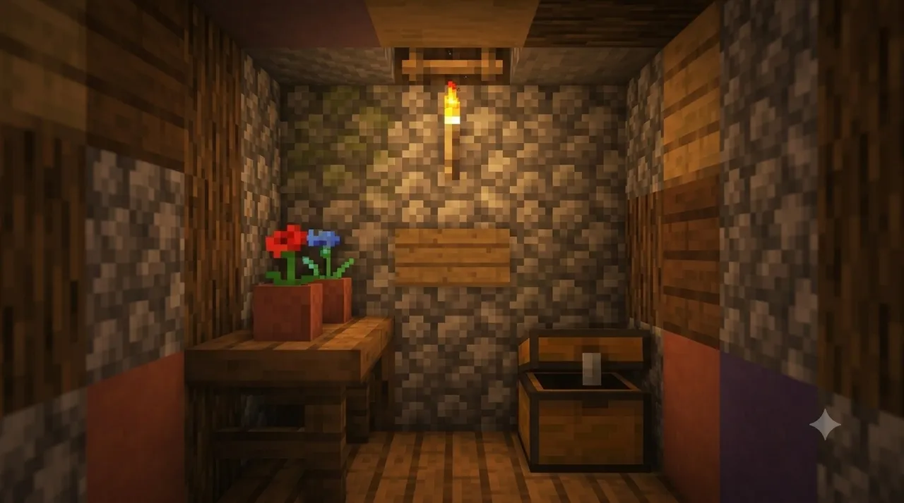
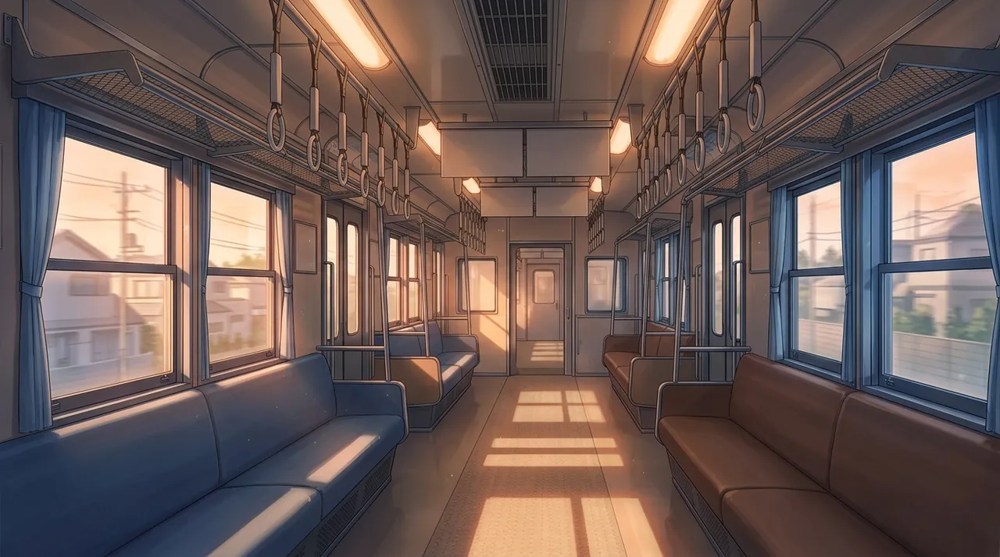
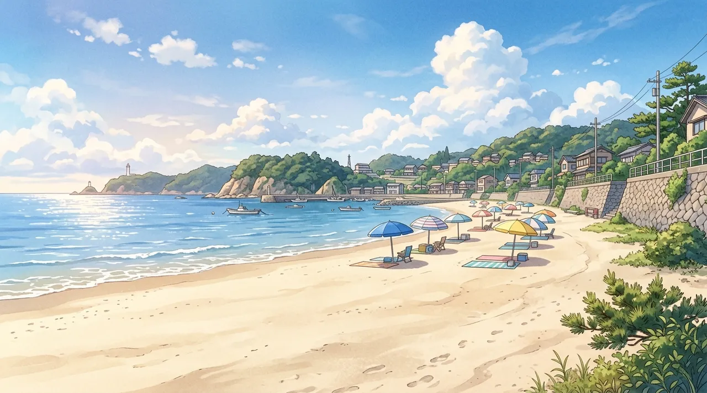
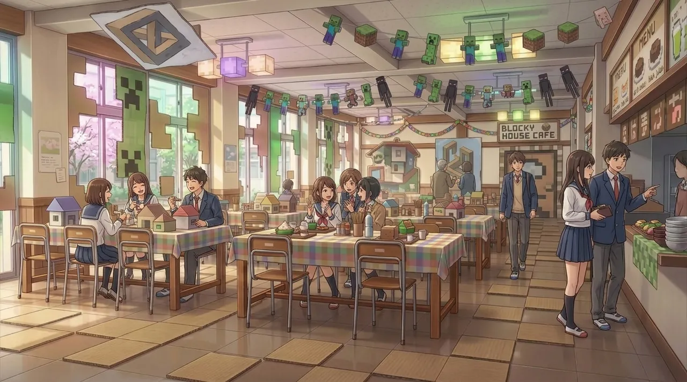
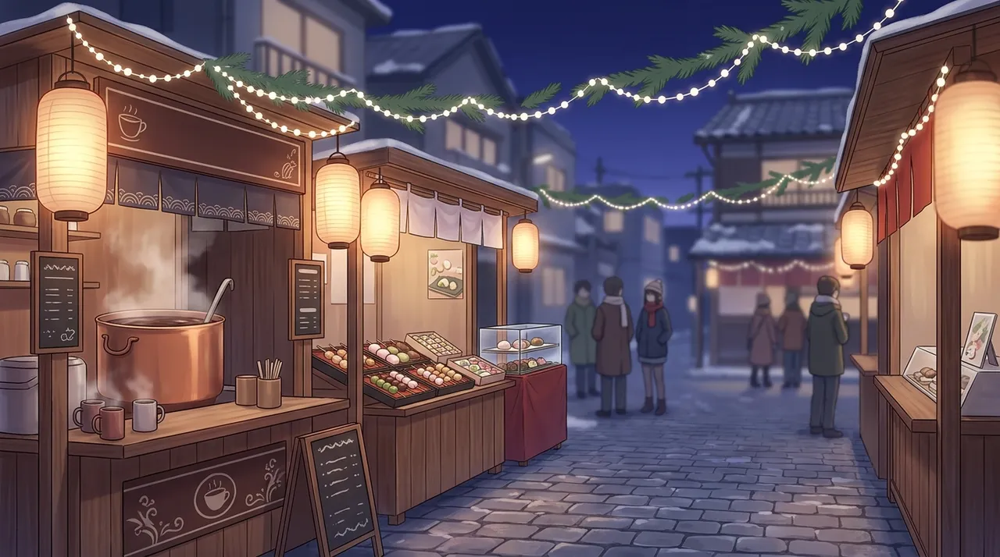
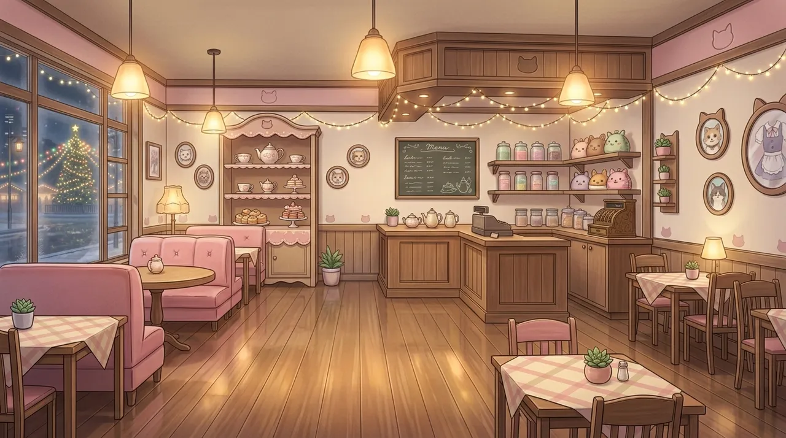
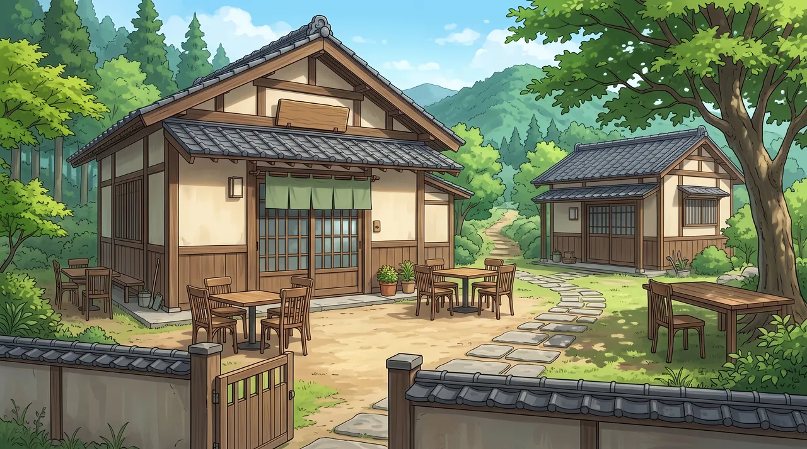
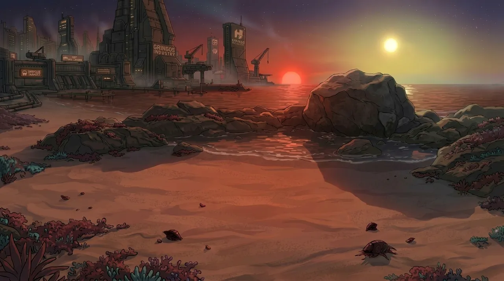

Lieux
La maison Minecraft
Section intitulée « La maison Minecraft »La maison que Jessy construit sur un serveur Minecraft public, au début de l’histoire : trop de fenêtres, trop de toits, une passerelle et une tour « pour justifier l’existence d’une autre tour ».

Les pièces du prologue (Prologue, arcs/prologue/prologue_minecraft.rpy)
- L’entrée et sa pancarte : « NE PAS ENTRER. SAUF SI TU AS UNE BONNE IDÉE. » (l. 44) — scène 1. Décor
images/scenes/backgrounds/minecraft/bg_prologue_house_entrance.png. - L’intérieur « bizarre » et l’étage inachevé : escalier « en cours de réflexion », porte qui « attend son étage » (l. 73-79) ; Ilona y retire un bloc, un mur, un bout de plafond et une poule tombent (l. 88-99) — scène 2. Décors
bg_prologue_weird_interior.png,bg_prologue_accident_floor.png. - Le trou transformé (
maison_minecraft_transformation, l. 155-227) — scène 3 :serre: serre aérienne de terre, de fleurs et de lanternes suspendues (bg_prologue_greenhouse_branch.jpg) ;poulet: poulet géant, gardien de la cuisine, sur le toit (bg_prologue_chicken_roof_branch.png) ;toboggan: d’une chambre inachevée jusqu’à un coffre vide (bg_prologue_slide_branch.png) ;piscine: elle traverse deux pièces et inonde le couloir (bg_prologue_pool_branch.png).
- La salle secrète, derrière les escaliers : porte inutile, coffre vide, fleurs et pancarte « salle moyennement importante » (l. 228-249) — scène 4.
- Le toit, la nuit (
bg_prologue_roof_night.png) et le couloir sans sortie, qu’Ilona refuse d’enlever (l. 361) — scène 7. - Alexandre plante une seconde pancarte : « NE SURTOUT PAS RENDRE ÇA NORMAL. » (l. 344) — scène 6.

Arc I : la transformation du prologue est commentée dans le couloir et à la cantine (scène 1, scène 7). Le poulet géant s’appelle « Monsieur Plume » (arc_1_printemps.rpy:618) ; la serre « intimide toujours les tomates » (l. 621) ; avec la piscine, le couloir « a des vagues maintenant » (l. 625).
Arc II : la maison de nuit sert de dernier décor de l’arc (scène 11). Il y a désormais plusieurs cuisines, dont une « cuisine d’été » citée comme existante (arc_2_plage.rpy:1120). Ce décor (images/scenes/backgrounds/minecraft/bg_arc2_minecraft_house_summer_night.jpg) est réutilisé aux arcs III à VI.

Arc III (scène 11) : selon la réponse à la confession d’Ilona, un panneau « ICI, LES PHRASES ONT LE DROIT DE TREMBLER » est posé (arc_3_rentree.rpy:1059), la cuisine d’été est rangée, la porte inutile est fermée, ou la cuisine d’été est détruite (arc3_fin_minecraft = "destruction", l. 1088-1116).
Arc IV (scène 9) : la maison « sous la neige » réutilise le décor d’été de l’arc II. La miniature de la maison peut être reconstruite dans la salle secrète, l’écharpe devenir un bloc de laine bleue rangé dans un coffre (arc_4_noel.rpy:1320), ou un coin dehors accueillir le carnet.
Arc V (scène 10) : selon la partie, une salle de repos « reliée, mais séparée » (arc_5_examens.rpy:2473), un panneau « BESOIN D’AIR » devant la salle secrète (l. 2528), ou le mot de passe du serveur donné à Théo (l. 2516).
Arc VI, variante où Ilona reste (scène 5a) : Jessy construit une dernière chose — une porte sans mur, deux panneaux « finir ses phrases » et « droit de partir », rien du tout, ou un cadenas sur le coffre commun (arc_6_diplomes.rpy:1850-1877). La Route A commence aussi dans la maison (scène 1).
Fin A1 : un trou ouvert puis refermé dans la maison (images/scenes/backgrounds/minecraft/bg_friend_minecraft_trou_ouvert.png, bg_friend_minecraft_trou_ferme.png) — scène 1 ; la maison revient dans les appels des années suivantes (scène 8).
La rivière du serveur
Section intitulée « La rivière du serveur »Au bord d’une rivière, sur le serveur, la nuit du prologue : un personnage sans pseudo, crédité « ??? », y apparaît puis disparaît — scène 7. Décor images/scenes/backgrounds/minecraft/bg_prologue_river_laplage.png.
L’école est le cadre principal de l’année scolaire.

- Couloir (
images/scenes/backgrounds/school/bg_shared_school_corridor.jpg) : panneau des classes le jour de la rentrée, question d’Allan au premier intercours — arc I, scène 1, scène 5. - Toit (
bg_arc1_rooftop_lunch.jpg) : le lieu du duo à midi et après les cours — scène 2, scène 6. - Cantine (
bg_arc1_school_cafeteria.jpg) — scène 7.

Le couloir sert encore à l’annonce de la sortie à la plage, en juillet (arc II, scène 1).
- Couloir du deuxième étage (
bg_arc3_festival_hallway.jpg) : chantier, enquête, duel et confession — arc III, scène 2, scène 5, scène 7, scène 8. - Salle de classe, le soir (
bg_arc3_classroom_evening.jpg) — scène 9, scène 10. - Le stand et la cour : voir Le festival.
- Salle de classe (
bg_arc5_classroom.jpg) et toit du lycée (bg_arc5_rooftop.jpg) : Saint-Valentin et White Day — arc V, scène 4, scène 7. - La bibliothèque : voir Bibliothèque, cinéma et café.
- Classe du matin (
bg_arc6_classroom_morning.jpg) — arc VI, scène 1. - Gymnase de la cérémonie (
bg_arc6_gym_ceremony.jpg) — scène 2. - Salle 3-B décorée (
bg_arc6_classroom_festive.jpg) — scène 3. - Couloir vide du deuxième étage : le décor dédié
bg_arc6_corridor_empty.jpgest absent, le jeu affiche le couloir commun — scène 4. - Cour, le 26 mars, cerisiers encore fermés (
bg_arc6_courtyard_march.jpg) — scène 5. - Le distributeur du deuxième étage rend la monnaie en pièces de dix (
arc_6_diplomes.rpy:1180-1185).

Le train et les gares
Section intitulée « Le train et les gares »
Jessy et Ilona découvrent qu’ils prennent le même train : quai (images/scenes/backgrounds/transport/bg_arc1_train_platform.jpg) puis intérieur (bg_shared_train_inside.jpg) — arc I, scène 3. C’est là que la phrase « Ilona, je voulais te dire que— » est coupée (arc_1_printemps.rpy:260).
Le train mène à la mer (arc II, scène 2), ramène les uniformes en septembre (arc III, scène 1) et conduit à la galerie commerciale en décembre, avec un décor propre (bg_arc4_train_inside.jpg, arc IV, scène 1).
Gare, quai désert (bg_arc5_train_station.jpg) : la question d’Ilona, avec huit minutes avant le train suivant — arc V, scène 6.
La même gare sert au départ du 6 avril, dans la variante où Ilona part (arc VI, scène 5c).
Le konbini
Section intitulée « Le konbini »Supérette où Ilona propose de passer un vendredi : rayon snacks, rayon boissons. Elle y trouve le bonbon étoile, et le « type de la rivière » y réapparaît près des boissons — arc I, scène 4. Décor images/scenes/backgrounds/city/bg_arc1_konbini_snacks.jpg, musique audio/music/kombini.ogg.

La plage
Section intitulée « La plage »
Sortie de groupe un samedi de juillet (arc II). Décors dans images/scenes/backgrounds/beach/ :
| Endroit | Décor | Scènes |
|---|---|---|
| Coin du parasol | bg_arc2_group_parasol.jpg | s3, s6 |
| Stand de kakigōri | bg_arc2_kakigori_counter.jpg | s4 |
| Plage (photo de groupe) | bg_arc2_beach_main.jpg | s5 |
| Mares entre les rochers | bg_arc2_tide_pools.jpg | s7, s8 |
| Jetée | bg_arc2_jetty.jpg | s8 |
| Table des objets trouvés | bg_arc2_lost_items_table.jpg | s9 |
| Coucher de soleil | bg_arc2_beach_sunset.jpg | s10 |
Le coucher de soleil revient en flashback dans le récapitulatif de l’arc VI (scène 3).
La plage revient dans deux fins : la Fin A1 (sortie de fin d’été, puis les étés suivants, avec une promenade images/scenes/backgrounds/friend/bg_friend_promenade_depart.png / bg_friend_promenade_arrivee.png) et la Fin B2 (plage au crépuscule, quarante ans plus tard, scène 4).
Le festival
Section intitulée « Le festival »Festival scolaire de l’arc III. La classe d’Allan tient un café, celle de Jessy et Ilona fait la décoration (arc_3_rentree.rpy:110).
- Stand du Blocky House Café, avant puis pendant le festival (
images/scenes/backgrounds/school/bg_arc3_festival_stand.jpg,bg_arc3_festival_stand_with_students.jpg) — scène 3, scène 4. Voir Objets et concepts. - Cour du lycée : étal de sucreries et stand de takoyaki tenu par Monsieur Laplage (
bg_arc3_festival_courtyard.jpg) — scène 6. - Couloir du deuxième étage, transformé en chantier puis en café (
bg_arc3_festival_hallway.jpg).

Galerie commerciale, marché de Noël et rivière
Section intitulée « Galerie commerciale, marché de Noël et rivière »Une seule journée de décembre (arc IV) :
- Galerie commerciale, papeterie (
images/scenes/backgrounds/city/bg_arc4_shopping_gallery.jpg), puis rue illuminée (images/scenes/backgrounds/winter/bg_arc4_illuminations.jpg) — scène 2. - Marché de Noël du quartier : stand de mochi, stand de cartes postales, banc près du brasero (
bg_arc4_christmas_market.jpg) — scènes 3, 4, 5, 8. - Rambarde le long de la rivière (
bg_arc4_riverside_winter.jpg) : le mochi, le Père Noël intérimaire, la limite d’Ilona — scène 6, scène 7.

Un café ouvert jusqu’à minuit
Section intitulée « Un café ouvert jusqu’à minuit »Un maid café « OUVERT JUSQU’À MINUIT » (images/scenes/backgrounds/city/bg_arc4_5_maid_cafe_exterior.jpg, bg_arc4_5_maid_cafe_interior.jpg), visité dans l’une des deux scènes 4.5 possibles — le maid café secret ou la marche avec Théo. Sofiane y travaille depuis trois mois (arc_4_5_maid_cafe.rpy:156). La marche passe par un parc résidentiel (allée, banc sous un lampadaire, images/scenes/backgrounds/winter/bg_arc4_park_bench.jpg), décor qui remplace « tant que la rue dédiée n’existe pas » (arc_4_5_theo.rpy:8).

Dans la Route A, le parking du maid café n’apparaît qu’en CG (images/scenes/cg/sofiane_initial_d/).
Bibliothèque, cinéma et café
Section intitulée « Bibliothèque, cinéma et café »- Bibliothèque, de jour (
images/scenes/backgrounds/school/bg_arc5_library.jpg) et le soir près des casiers (bg_arc5_library_night.jpg) — arc V, scène 1, scène 3, scène 5. - Rue sous la pluie, devant le cinéma ou sous un auvent (
images/scenes/backgrounds/city/bg_arc5_rain_street.jpg) — scène 2, scène 9. - Cinéma : hall, salle, sièges (
bg_arc5_cinema_box_office.jpg,bg_arc5_cinema_auditorium.jpg,bg_arc5_cinema_seated.jpg), seulement dans la version « cinéma » de la scène 2. - Café (
bg_arc5_cafe.jpg) — scène 2 (version annulation), scène 8. - Parc près de la gare, sous les premiers cerisiers (
bg_arc5_park_spring.jpg) — scène 7.

Le café réapparaît comme « café de la gare » dans la Fin A1.
Lieux de l’arc VII et des fins
Section intitulée « Lieux de l’arc VII et des fins »Les lieux propres à l’arc VII et aux fins dépendent de la route suivie.
Montagne et randonnée (Route A, décors dans images/scenes/backgrounds/hiking/) :
- rayon randonnée d’un magasin de sport (
bg_arc7_jessy_boutique.jpg) — scène 1 ; - point de rendez-vous, route de montagne, départ des sentiers (
bg_arc7_jessy_depart.jpg,bg_arc7_jessy_route.jpg,bg_arc7_jessy_sentier.jpg) — scène 2 ; - sentier, rivière, champ de fleurs, promontoire, racontés en CG (
images/scenes/cg/jessy_epopee/) — scène 3 ; - embranchement en forêt (
bg_arc7_jessy_sentier_ours.png) et lac de montagne (alexandre_peche_lac_ponton_vide.jpg) — scène 4 ; - bivouac dans une clairière, de jour, de nuit et à l’aube (
bg_arc7_jessy_bivouac.jpg,bg_arc7_jessy_nuit_tente_ferme.jpg,bg_arc7_jessy_aube.jpg) — scènes 5, 8, 9 ; - route de montagne de nuit, en CG seulement (
images/scenes/cg/sofiane_initial_d/) — scène 6.
Le même soir, Tokyo : restaurant après la pluie et parc de nuit (images/scenes/backgrounds/tokyo/bg_arc7_tokyo_restaurant_night.jpg, bg_arc7_tokyo_park_night.jpg) — scène 7.

Tokyo (Route B, décors dans images/scenes/backgrounds/tokyo/) :
- gare d’arrivée (
bg_arc7_tokyo_arrival_station.jpg) — scène 1 ; - appartement à deux chambres loué par le studio « pour huit mois au moins » (
arc_7_theo.rpy:162) : matinbg_arc7_tokyo_house_morning.jpg, nuitbg_arc7_tokyo_house_night.png, nuit éteintebg_arc7_tokyo_house_night_nolight.jpg; - studio de streaming à deux rues de l’appartement (
bg_arc7_tokyo_streaming_studio_night.jpg) — scène 3 et suivantes ; - konbini du quartier (
bg_arc7_tokyo_konbini_night.png), petit restaurant (bg_arc7_tokyo_restaurant_night.jpg), parc de nuit (bg_arc7_tokyo_park_night.jpg) — scène 7, scène 11, scène 19.

Fin A1 (images/scenes/backgrounds/friend/) : chambres de Jessy et d’Ilona, gare du matin, train de nuit, promenade, appel vidéo et appels Discord, appartement d’Allan (bg_friend_appartement_allan.png, _repas.png) — scènes. Aucun lieu ni métier n’y est nommé précisément.
Fin A2 : un restaurant en ville (images/scenes/backgrounds/family/bg_family_rendezvous.jpg), puis Les Petits Sommets, restaurant de montagne au toit de tuiles grises et au rideau vert, avec maison attenante (pièce en tatamis), jardin et sentier vers la forêt et le lac (ending_family.rpy:201-202, 255, 369). Décors bg_family_restaurant_jour.jpg, _soir.jpg, _nuit.png, bg_family_salle.jpg, bg_family_fete.jpg, bg_family_karaoke.png, bg_family_maison.jpg, bg_family_jardin_jour.jpg, bg_family_jardin_soir.jpg — scènes.

Fin A3 : chambre de Jessy, rue et chambre d’Ilona, plage à deux soleils (images/scenes/backgrounds/ilonanium/plage_deux_soleils.png), plage de l’exoplanète (images/scenes/illonanium/plage_exoplanete.png), bar d’Allan (bar.png), bureau du gouverneur et place d’armes du Capitole (governor_office.png, capitole_depart.png, capitole_retour.png), espace et passerelle du TAIKUN (taikun_orbite.png, fin_ilonanium0.png, passerelle_taikun.png), et une maison au milieu des champs sur l’Ilonanium (fin_ilonanium1.jpg, fin_ilonanium2.jpg) — scènes.

Fin B1 : l’appartement de Tokyo, de nuit puis de jour, et la gare de Tokyo, même décor que l’arrivée (ending_neutre.rpy:476) — scène 6.
Fin B2 : bar de Tokyo (images/scenes/backgrounds/tokyo/bg_bad_ending_tokyo_bar_night.jpg), rue de nuit, studio vu sous un autre décor (images/scenes/backgrounds/streaming/bg_arc7_intro_stream.jpg), couloir et chambre de l’appartement (bg_bad_ending_apartment_corridor_night.jpg, bg_bad_ending_ilona_door_bedroom.jpg, bg_bad_ending_ilona_bedroom.png), puis la plage au crépuscule — scènes.